CÁCH CHỌN BỘ PHẬN PC
Hướng dẫn cách chọn linh kiện để lắp ráp máy tính
Hướng dẫn chọn CPU – Bộ vi xử lý phù hợp
Hướng dẫn chọn Bo mạch chủ – Mainboard
Hướng dẫn chọn Ổ cứng (HDD và SSD)
Hướng dẫn chọn VGA (Card đồ họa hoặc Card màn hình)
Cách chọn Nguồn – PSU
Cách chọn RAM – Bộ nhớ đệm
Cách chọn Vỏ máy tính chơi game – Gaming PC’s Case:
Cách chọn tản nhiệt – Fan, Cooler:
Trước khi bắt đầu, bạn sẽ nên để ý một chút về cách thiết lập một khu vực làm việc tốt. Hãy chọn những chiếc bàn phù hợp với vóc dáng. Kê bàn ở những khu vực nhiều ánh sáng và thoáng khí trong phòng và một điều quan trọng nữa là thời gian. Hãy đảm bảo bạn có ít nhất là nửa ngày rảnh rỗi để làm cho xong công việc của chúng ta hôm nay, đó là lắp ráp các thiết bị phần cứng lại với nhau.
Các bộ phận máy tính:
Cách chọn tốt các thành phần máy tính cho người muốn lắp ráp.
Ưu điểm của việc tự lắp ráp máy tính là gì ?
Ưu điểm của một máy tính tự lắp ráp rất nhiều, nhưng hãy chắc chắn rằng nó phù hợp với mình nếu không muốn cảm thấy hối tiếc về quyết định tự build máy tính. Đây là một vài lý do cho điều đó:
*Có thể dễ dàng nâng cấp máy tính của mình hơn, thay mới các bộ phận để nâng cao hiệu suất.
*Có thể tự chọn các thành phần để phù hợp với công việc nhất và đảm bảo máy tính chạy nhanh hơn so với một máy tính được cấu hình sẵn (các máy tính này thường được cấu hình làm sao để giảm thiểu giá thành một cách thấp nhất có thể).
*Có thể ép xung máy tính để đạt được tốc độ cao hơn mà các thành phần của bạn có khả năng.
*Vì đam mê, niềm vui khi lựa chọn được những bộ phận mình cần và ráp chúng với nhau để tạo nên một chiếc máy tính độc đáo, mang bản sắc riêng của mình.
Nếu nghĩ rằng tự lắp ráp máy tính có thể rẻ hơn đi mua một máy tính bộ thì điều đó là hoàn toàn sai lầm. Nếu bạn chỉ dùng máy tính ở mức độ vừa phải, hãy mua một máy tính được dựng sẵn tại các cửa hàng, của Dell hay Acer cũng không tệ.
Sê-ri này gồm 5 phần, phần nào cũng dài lê thê, nhưng đừng lo lắng, bạn hãy tưởng tượng như mình đang lắp ráp đồ nội thất hoặc bộ LEGO vậy, mọi hướng dẫn đều cố gắng để mọi thứ phù hợp với nhau và đi theo chiều hướng tốt.
1. Hướng dẫn cách chọn linh kiện để lắp ráp máy tính:
Trước tiên bạn nên xác định xem bạn muốn lắp ráp máy tính để sử dụng cho công việc gì ? Tùy vào nhu cầu sử dụng để chơi game , làm đồ họa hay làm văn phòng để lựa chọn link kiện phù hợp.Để có một bộ máy tính để bàn hoàn chỉnh thì chắc chắn không thể thiếu những thành phần này để cấu tạo lên một bộ máy hoàn chỉnh.

- Vỏ Case: là vỏ thùng máy tính, bảo vệ các thành phần bên trong máy tính, giữ chúng trong một cấu trúc gọn gàng.
- Bo mạch chủ: Kết nối các thành phần của máy tính mà bạn đang lắp ráp. Đa phần chúng sẽ được gắn hoặc cắm vào đây.
- CPU: Bộ xử lý trung tâm. Bạn sẽ phải chọn một CPU tương thích với bo mạch chủ, cả về nhà sản xuất lẫn socket của nó.
- RAM: Cần chọn RAM tương thích với khe RAM của bo mạch chủ.
- Ổ lưu trữ: Tùy ngân sách và nhu cầu bạn có thể chọn ổ HDD hoặc SSD. SSD nhanh hơn nhiều so với HDD, nhưng HDD thì rẻ hơn và dung lượng lưu trữ lớn hơn.
- Card màn hình : xử lí hình ảnh , đồ họa ,..
- Bộ cấp điện: Hay còn gọi là PSU, cung cấp điện cho máy tính và các thành phần khác. Bộ này sẽ được kết nối trực tiếp với bo mạch chủ, CPU, ổ lưu trữ và các thành phần bổ sung khác, nếu cần.
Có rất nhiều câu hỏi quay vòng vòng trong đầu bạn, một máy tính thế nào là đủ mạnh? Nên chọn bộ xử lý Intel hay AMD, có cần card đồ họa không, card rời hay on-board? Nguồn điện bao nhiêu wat là đủ?Chúng ta sẽ chia nó thành từng phần để giải đáp những câu hỏi đang ùn lên trong đầu bạn nhé.
2.Hướng dẫn chọn CPU – Bộ vi xử lý phù hợp
Khi bắt đầu xây dựng một bộ PC, điều đầu tiên bạn phải quyết định là mình sẽ mua CPU nào. Nhiều người sẽ khuyên rằng nên chọn Bo mạch chủ (Mainboard) trước, nhưng chúng tôi khuyến nghị CPU mới là thứ cần được ưu tiên chọn đầu tiên khi Build PC. Bởi vì thương hiệu và socket của CPU quyết định loại mainboard nào phù hợp, tiếp sau đó mới mua RAM, VGA, PSU…
Chúng tôi sẽ hướng dẫn qua các bước để chọn được CPU phù hợp nhu cầu của bạn và những thuật ngữ liên quan.
Bộ vi xử lý hay còn gọi là CPU (The Central Processing Unit) được ví như “Bộ não” của máy tính. CPU thực hiện tất cả tác vụ và xử lý hệ thống thông tin hiệu quả nhất có thể. Nếu mà nói thêm về CPU 2 ngày nữa chưa đọc hết nên chúng tôi tập trung để làm thế nào chọn được CPU phù hợp nhất cho yêu cầu Build PC của bạn. Hãy bắt đầu với một số khái niệm để biết mà chém gió với tư vấn viên khi mua hỏi mua CPU.
 Các thuật ngữ cần biết:
Các thuật ngữ cần biết:
- Socket – là cổng cắm của CPU vào mainboard. Tùy dòng CPU và hãng sản xuất sẽ có socket khác nhau. Bạn cần để ý loại socket của CPU để sau đó mua mainboard phù hợp. Hiện nay, các CPU Intel sử dụng socket LGA1150 , LGA1151, LGA2011-3, LGA2066, LGA1151-v2 và socket FM2+, AM3+, AM4+ của CPU AMD.
- Nhân (Core) – Số lượng nhân thể hiện số lượng bộ vi xử lý độc lập có thể đọc và thực hiện các lệnh được lập trình. Hiện nay các CPU thông dụng có từ 2, 4, 6, 8 đến 10 nhân. Dĩ nhiên số nhân càng cao thì CPU càng mạnh nhưng chỉ so sánh trên cùng 1 dòng (cùng Intel Core i hoặc cùng AMD FX). Vậy nên chọn CPU có bao nhiêu nhân? Câu trả phụ thuộc vào nhu cầu và ngân sách của bạn. Nếu chỉ chơi game nhẹ thì 2 – 4 nhân là vừa, nếu chơi game nặng thì chip 6 – 8 nhân, còn bạn làm cả đồ hoạ, streaming và chơi các tựa game AAA mới nhất cùng lúc thì nên sử dụng chip 8 – 16+ nhân. Ngoài ra phải cân nhắc ngân sách vì còn nhiều linh kiện phần cứng hấp dẫn khác bên dưới cần quan tâm.
- Xung nhịp (Operating Frequency): là tần số bên trong của bộ vi xử lý, được tính bằng Hz (Hertz). Xung nhịp càng cao thì CPU xử lý càng nhanh. Xung nhịp CPU hiện nay dùng đơn vị GHz, tương đương 1 tỷ Hz. Cũng như số nhân (Core), xung nhịp nên chỉ so sánh giữa các CPU cùng dòng (Pentium, Core i3, Core i5…) vì mỗi dòng có số nhân khác nhau. Ví dụ CPU Pentium 4 3.2 GHz kém hơn Core i3 2.0 GHz vì chip i3 có nhiều nhân hơn. Tuy nhiên không phải cứ xung nhịp cao hơn thì hiệu năng sẽ mạnh hơn. Điều này còn phụ thuộc vào IPC tức số tập lệnh trong một clock.
- Bộ nhớ đệm – Cache (L1, L2, L3): Được sử dụng bở CPU để giảm thời gian CPU truy cập vào bộ nhớ chính. Những tác vụ thường lặp được lưu vào bộ nhớ đệm của CPU. Khi CPU truy vấn dữ liệu từ bộ nhớ chính, nó sẽ kiểm tra bộ nhớ đệm trước xem dữ liệu cần lấy đã được lưu Cache hay chưa. Việc này giúp giảm thời gian truy vấn dữ liệu. Khi chọn CPU cho máy tính chơi game, bạn cần lưu ý đến cache và biết cache có ý nghĩa gì. Nhưng cần tập trung nhiều vào Nhân (Core) và Xung nhịp trước. Và tất nhiều, nếu nhân và xung nhịp như nhau, thì CPU nào có cache lớn hơn thì tốt hơn. Hiện nay cache có mấy loại 3MB, 6MB, 8MB. Phổ biến nhất là các dòng CPU 6MB cache.
- Mức điện tiêu thụ (Thermal Design Power): có thể hiểu là công suất thoát nhiệt hay lượng nhiệt chip xử lý toả ra mà hệ thống làm mát cần phải giải toả. Hiểu cách khác là mức tiêu thụ điện của CPU. Đây là không phải là yếu tố quá quan trọng khi chọn CPU cho máy tính chơi game.
- Tản nhiệt CPU (CPU Cooling Device): là tản nhiệt hoặc quạt giúp giải toả nhiệt nóng do CPU tản ra khi hoạt động. Các CPU hiện nay đều có tản nhiệt kèm theo, với các CPU cũ hoặc các dòng CPU ép xung, bạn cần mua thêm tản nhiệt ngoài. Bạn cần phải kiểm tra kỹ CPU định mua có sẵn tản nhiệt không nhé. Thích CPU của mình mát hơn thì mua thêm quạt loại rẻ, tản nhiệt khí. Nếu có điều kiện kinh tế thì đầu tư tản nhiệt nước loại All-in-one (AIO) hoặc tự thiết kế (Custom).
Chọn CPU cho máy tính chơi game
- Bạn xây dựng máy tính là để chơi game, nên trước khi chọn CPU thì viết ra vài game bạn đang chơi hoặc muốn chơ trước. Kiểm tra cấu hình tối thiểu để chơi được game bạn muốn và tự hỏi bạn có muốn chơi ở mức cấu hình cao nhất hay không nhé.
- Một vài website có thể giúp bạn so sánh hiệu năng của các CPU với nhau như CPU benchmarks, hoặc nếu bạn đang dùng 1 PC thi thử vào System Requirements Lab, bạn có thể kiểm tra xem PC của mình có chạy nổi game mình muốn chơi không nhé. Thường các cấu hình của game đưa ra không ghi rõ chính xác tên CPU nào, họ sẽ chỉ ra CPU của bạn nên có Xung nhịp tối thiểu hoặc bao nhiêu nhân. Từ đó giới hạn loại CPU bạn có thể mua.
Nếu bạn quá lười và không thích đọc bất kỳ chỉ số đánh giá nào, cũng đừng lo, xem luôn tại đây cho dễ nhé “Cấu hình PC theo từng Game”. Nếu game bạn muốn chơi chưa có trong danh sách này thì thoải mái bấm vào nút Messenger yêu cầu Admin cập nhật ngay cấu hình cho game bạn muốn chơi nhé.
Các bộ phận máy tính:
3.Hướng dẫn chọn Bo mạch chủ – Mainboard
Các thuật ngữ cần biết để chọn được một mainboard tối ưu cho máy tính chơi game
Loại Socket của CPU
Đây chính là loại socket của CPU bạn chọn. Mỗi loại CPU đều có 1 loại socket duy nhất vừa hợp với main. Nên bạn cần chắc chắn chọn đúng main phù hợp với CPU.
Ví dụ: Nếu đã chọn CPU AMD có socket loại AM3+ thì cần chọn 1 loại main cũng có socket AM3+. Tương tự với CPU Intel có socket LGA 1151 cần main có socket 1151.
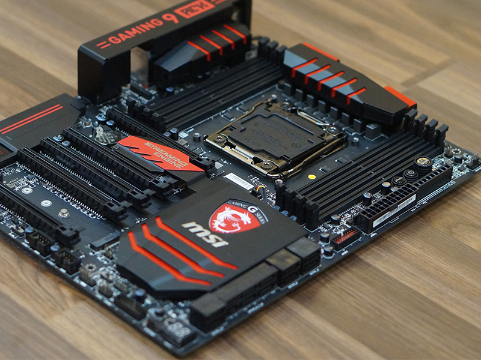
Chipsets
Là bộ 2 chip trên main gồm chip cầu bắc và chip cầu nam. Bộ chipset này có nhiệm vụ trung gian giao tiếp giữa CPU và các thiết bị khác kết nối vào mainboard.
– Chip cầu bắc: kết nối CPU với các thiết bị cấp cao như bộ nhớ chính, đồ hoạ
– Chip cầu nam: kết nối CPU với các thiết khác như ổ cứng, LAN, chip âm thanh, USB..
Tuy nhiên, hiện nay có một số thiết kế mới như mainboard sử dụng chipset X99. Intel gọi Cầu nam giờ là một “PCH” (Platform Controller Hub) cho phép các thiết bị kết nối trực tiếp với CPU. Bạn có thể đến đây là được rồi, nên dành thời gian quan tâm đến các bộ phân khác.
Bộ nhớ
Xác định mainboard bạn chọn có thể tương thích với RAM như thế nào: Số lượng khe cắm, tổng dung lượng RAM tối đa, số pin của RAM phải có, loại RAM (DDR4 hay DDR3) và hỗ trợ đa kênh hay không (ví dụ nếu hỗ trợ dual channel thì cắm 2 thanh cùng dung lương sẽ tốt hơn cắm 1 thanh RAM).
Các cổng cắm mở rộng.
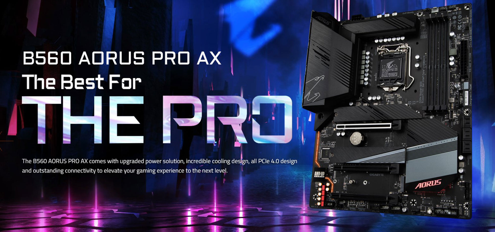
Tuỳ loại main sẽ có số lượng cổng cắm mở rộng khác nhau. Thông thường tối thiểu phải có 1 cổng PCI Express 3.0 x16, 1 cổng PCI Express 3.0 x8 và vài cổng PCI khác. Bạn nên chọn mainboard dựa trên nhu cầu cắm các thiết bị ngoại vi của bạn vào mainboard hiện tại và cả sau này. Các thiết bị ngoại vi thường là Card đồ hoạ (hầu hết dùng cổng PCIe 3.0 x16), cổng USB (2.0, 3.0, 3.1), cổng internet, cổng SATA (6Gb/s) cắm ổ cứng,.. Khi mà chúng ta đã quan tâm đến xây dựng máy tính chơi game thì bắt buộc phải có chỗ cho 1 hoặc 2 Card đồ hoạ (VGA).
Thiết bị lưu trữ (Ổ cứng)
Các mainboard thông dụng hỗ trợ một số cổng kết nối như SATA III (dòng ATA) hay M.2 (cổng nhanh hơn) để kết nói với ổ cứng SSD hoặc HDD. Khi mua hàng phải để ý mainboard có thể kết nối với bao nhiêu ổ cứng.
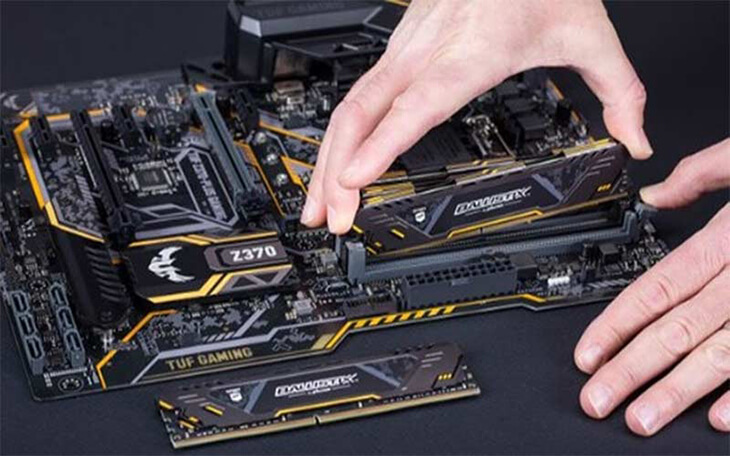
Các bước để chọn Bo mạcn chủ – Mainboard – cho máy tính chơi game
Bước 1: Xác định ngân sách
Vẫn là thế, bạn luôn phải xác định ngân sách là thứ đầu tiên phải quan tâm khi chọn mua phần cứng máy tính. Tại sao? Vì qua nhiều năm kinh nghiệm bán PC, chúng ta thấy rằng hầu hết các bạn thích chọn 1 CPU rất khoẻ kèm sau đó là 1 mainboard hào nhoáng rồi hết tiền cho những linh kiện quan trọng khác. Chúng tôi khuyên rằng bạn chỉ cần chọn một chiếc main tầm trung có đủ số cổng kết nối cần thiết với nhu cầu sử dụng: HDMI, VGA, DVI, USB, LAN,… Bạn sẽ tiết kệm được một khoảng tiền kha khá đer đầu tư vào RAM hoặc Nguồn tốt hơn.
Bước 2: Đảm bảo tất cả linh kiện sẽ tương thích với nhau
Sau khi chọn CPU đầu tiên bạn phải đảm bảo chọn 1 mainboard có socket khớp với socket của CPU. Với những linh kiện khác, bạn cần ít nhất 1 cổng PCI Express 3.0 x16 cho 1 VGA (hoặc 2 cổng cho 2 VGA), đủ cổng USB cho các thiết bị ngoại vi như chuột chơi game, bàn phím, tai nghe, và cuối cùng đủ khe cắm RAM với dung lượng đủ sức chiến game định chơi. Cuối cùng nhìn xem mainboard bạn định mua có kích thước to hay nhỏ, điều này sẽ tương đương với kích thước của cả bộ PC.
Bước 3: Nghĩ luôn cho tương lai
Đừng chỉ nghĩ về số cổng kết nối, RAM, card đồ hoạ bạn cần chính xác lúc giờ. Nghĩ xem nửa năm hay 1 năm sau với những game mới, cấu hình cao hơn bạn có phải đổi main cho phù hợp nâng cấp cấu hình không. Nâng cấp các linh kiện khác thì dễ, chứ nâng cấp main là cả 1 vấn đề. Lời khuyên ở đây rằng hay chọn 1 mainboard hỗ trợ dung lượng tối đa của RAM cao tầm 32GB hoặc 64GB, thừa sẵn 1 cổng PCIe cho VGA, vài cổng SATA cho ổ cứng và cổng M.2 cho ổ SSD.
Lời kết: để bạn chọn một mainboard tốt cho máy tính chơi game
Chúng tôi hy vọng bạn học được thứ gì đó để biết mà chọn được mainboard phù hợp với nhu cầu của mình khi xây dựng cấu hình máy tính chơi game. Chọn mainboard luôn là bước khó nhất của những người mới tập tành build PC vì trên main có quá nhiều khu vực, thông số (được gọi tắt là main) là phần kết nối tất cả các linh kiện khác trong bộ PC với nhau, được ví như bộ xương của chiếc máy tính. Phân tích cấu tạo mainboard sẽ thấy được các phân vùng cơ bản: Socket để giữ CPU, các khe cắm RAM, chipset (quyết định sự tương thích giữa main đối với CPU, và đôi khi là hiệu năng của main), chip nhớ chứa firmware hoặc BIOS (phần mềm điều khiển mainboard), mạch tạo xung giữ mọi thứ đồng bộ với nhau, các khe cắm kết nối với thiết bị ngoại vi (chuột, phím, intern, tai nghe…) và cổng kết với với nguồn điện cung cấp cho cả mainboard.
4.Hướng dẫn chọn Ổ cứng (HDD và SSD)
Ổ cứng là thiết bị lưu trữ dữ liệu, phần mềm và hệ điều hành của PC, bao gồm các loại ổ đĩa quang thường được sử dụng để đọc và ghi dữ liệu trên CD, DVD và Blu-ray.
Khi ổ đĩa kết nối với bo mạch chủ sẽ được dựa trên kiểu công nghệ kết nối điều khiển mà nó được trang bị, bao gồm kết nối tiêu chuẩn IDE và tiêu chuẩn SATA.
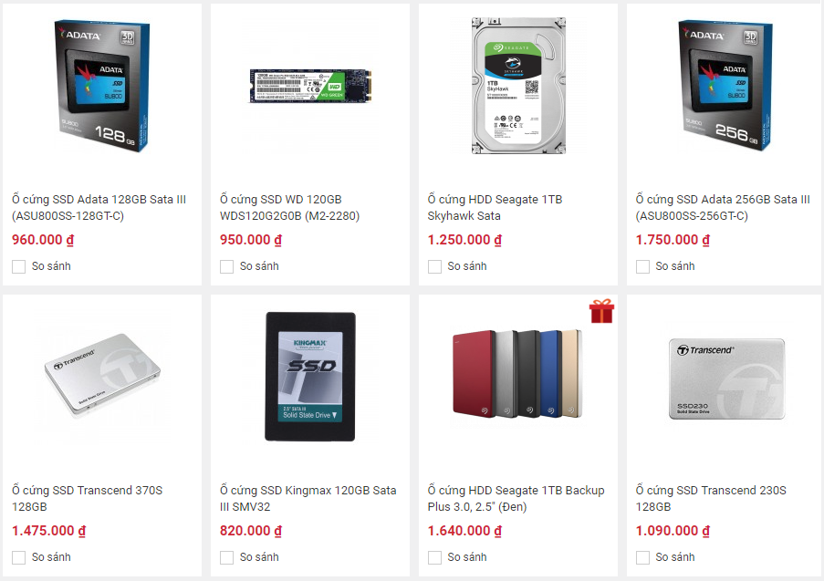
Hiện nay có rất nhiều loại thiết bị lưu trữ, 2 loại thông dụng nhất được chọn là HDD và SSD:
HDD (Hard Disk Drive):
HDD thường được gọi là ổ đĩa cứng, có kích thước thông dụng là 3.5inch cho máy tính để bàn và 2.5inch cho laptop. HDD sử dụng cơ chế cơ học, từ tính để lưu trữ, có ổ đia, trục quay. HDD có giá thành rẻ và dung lượng lớn, tuy nhiên tốc độ đọc/ghi chậm hơn các loại ổ cứng khác. Vì thiết kế cơ học, nên HDD dễ bị hỏng nếu va đập mạnh. HDD sử dụng dây nguồn và dây dữ liệu để kết nối với mainboard.
SSD (Solid State Drive):
SSD thường được gọi là ổ thể rắng hay ổ SSD cho gọn, có kích thước 2.5inch, thiết kế theo công nghệ mới (next-gen) cao cấp hơn HDD rất nhiều và không sử dụng cơ học lẫn từ tính. SSD sử dụng chip nhớ (memorcy cell) đa tầng (MLC – multi-level cell) hoặc đơn tầng (SLC – single-level cell). MLC thì sử dụng nhiều luồng 1 lúc nhanh hơn nhưng tuổi ngắn hạn SLC. Điểm mạnh rõ rệt của SSD so với HDD là tốc độ đọc/ghi vượt trội, không mỏ manh dễ vỡ như HDD, nhưng giá thành quá cao. Một SSD dung lượng 120GB có giá tương đương 1 HDD 1 TB. SSD cũng sử dụng dây nguồn và dây dữ liệu kết nối với mainboard như HDD.
M.2:
Sử dụng công nghệ và chip nhớ như SSD nhưng thay vì kết nôi với mainboard qua dây nguồn và dây dữ liệu thì M.2 được gắn vào cổng PCIe dành riêng cho nó. Điểm lợi so SSD thì M.2 tốc độ nhanh hơn hẳn và ít tốn diện tích, dây dẫn. Nhưng bất lợi với giá thành quá cao. Ngoài ra đòi hỏi mainboard phải có cổng PCIe dành riêng ch M.2. Nếu mainboard không có thì bạn mua ổ M.2 xem như vô dụng.
PCI-E:
Giống như SSD nhưng kết nối qua cổng PCIe chung trên mainboard (không phải thiết kế cổng riêng như M.2). Điểm lợi đương nhiên tốc độ phải nối chóng mặt, so với SSD thông thường thì như rùa chạy với thỏ. Tuy nhiên, loại SSD dùng cổng PCIe này giá rất chát theo tốc độ của nó, chiếm diện tích khi ngốn hẳn 1 cổng PCI-e. Điều này bất lợi cho những ai muốn gắn ở VGA trên mainboard.
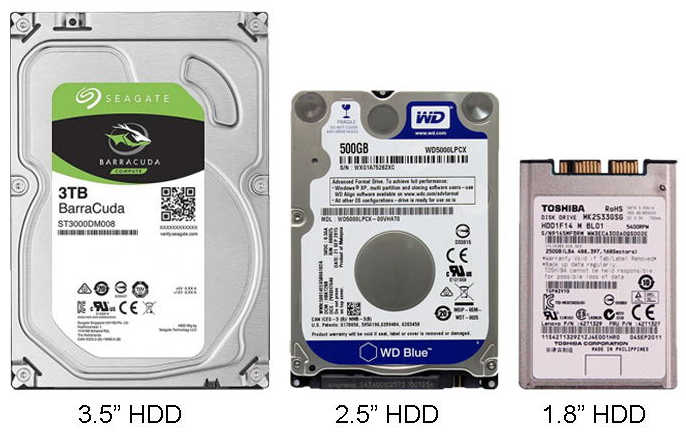
Lời kết
Xét cho cùng, đối với game thủ chúng ta thì sử dụng SSD vẫn là hợp lý nhất để có khởi động máy nhanh, load game nhanh và không bao giờ đau đầu vì việc chậm chạp của HDD. Nhưng sẽ phải đau đầu vì cái khác: Túi tiền. Một ổ SSD 120-128GB sẽ không đủ nếu bạn chơi nhiều game. Nâng lên 240-256GB thì giá gấp đôi.
5.Hướng dẫn chọn VGA (Card đồ họa hoặc Card màn hình)
Bước 1: Ngân sách
Lần nữa, chúng tôi phải đề cập rằng ngân sách luôn là bước đầu tiên phải suy nghĩ khi xây dựng máy tính chơi game. Bởi vì bạn có thể bị sốc khi khi ngân sách của mình cạn kiệt nhanh chóng sau khi chọn VGA – linh kiện thường là đắt nhất trong 1 bộ PC.
Có một điều đáng buồn là VGA rất nhanh bị đào thải. Một VGA cao cấp nhất có thể chỉ sau vài năm sẽ bị thay thế bởi nhữn VGA đời mới, giá thành cạnh tranh hơn. Bởi vậy, chúng tôi thường xuyên tư vấn khách hàng mua VGA giá tầm trung, đáp ứng được nhu cầu chơi game và hài lòng với medium setting, FPS 60.
Bước 2: Kiểm tra yêu cầu của game bạn định chơi
Tại sao phải lựa chọn VGA dựa trên game định chơi? Chẳng ai mua GTX 1060 để chỉ chơi Liên Minh Huyền Thoại, Dota 2, giống như lấy dao mổ trâu đi làm gà vậy. Còn bạn không thể mua GT 730 để chơi PUBG, Overwatch, sẽ lag tung màn hình. Vì vậy chọn VGA dựa theo yêu cầu của game bạn muốn chơi là điều phải cân nhắc.
Làm thế nào để chọn VGA dựa trên game đang chơi.
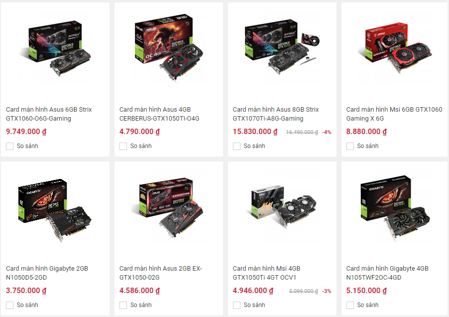
Vậy chính xác thì phải làm thế nào? Có một số cách sau:
Cách thứ nhất là tự kiểm tra cấu hình tối thiếu và cấu hình đề nghị theo yêu cầu của game. Từ chọn tìm các VGA có cấu hình ít nhất là theo cấu hình đề nghị của game. Một số game không ghi rõ cấu hình VGA phải thế nào, chỉ đưa ra dòng VGA tối thiểu có thể chơi, thì bạn chọn dòng VGA cao hơn là được.
– Cách thứ hai đơn giản hơn là chỉ cần hỏi các shop chuyên xây dựng máy tính chơi game như Phong Vũ. Chỉ ra các game bạn muốn chơi, yêu cầu hỗ trợ một vài dòng VGA tuỳ mức setting khác nhau và chọn 1 số đó phù hợp với ngân sách của bạn.
– Cách thứ ba là xem các video trên Youtube về gameplay, đánh giá cấu hình theo game. Ví dụ streamer test Blade and Soul trên VGA GTX 980. Để ý các thông số cơ bản như FPS, độ phân giải, mức setting. Nếu đồ hoạ game họ chơi đáp ứng mong đợi của bạn thì thế nào theo. Lưu ý, trường hợp bạn chỉ chơi game mà không phải streaming thì VGA xử lý đồ hoạ nhanh hơn, nên cùng 1 cấu hình PC thì chất lượng hình ảnh bạn thưởng thức sẽ cao hơn các streamer trên Youtube.
Bước 3: Xác định độ phân giải và mức cài đặt của game bạn muốn chơi. Đồng thời cả thiết bị ngoại vi muốn sử dụng
Sau khi xác định thông tin VGA tối thiểu phải có, bạn cần xác định đồ hoạ game mình muốn chơi game ở độ phân giải 1080p hay 1440p và FPS bao nhiêu (đương nhiên ai cũng muốn ít nhất 60 FPS).
Bên cạnh đó, bạn cũng phải chắc là VGA có cổng output tương thích với màn hình. Trường hợp bạn mua màn hình mới (như Phong Vũ luôn giảm 5% màn hình khi mua cùng bộ PC) hoặc sẵn sàng mua cổng chuyển thì không phải quan tâm vấn đề này.
Bước 4: Chọn VGA của NVIDIA hay AMD
Hiện nay ở bất kỳ phân khúc nào, game thủ đều phải bối rối bởi sự cạnh tranh khốc liệt giữa 2 gã khổng lồ sản xuất VGA là Nvidia và AMD. Nvidia luôn rất tuyệt vời với nhiều tính năng hỗ trợ máy tính chơi game, còn AMD luôn có được mức giá cạnh tranh.
Nvidia đang quẩy rất nhiệt tình ở phân khúc cao cấp với các dòng VGA 1080, 1080Ti với mức giá lên đến trên dưới 20 triệu Đồng. Còn AMD trung thành với phân khúc tầm trung và tầm thấp với RX470, RX480 tiết kiện điện năng.
Dĩ nhiên cái gì cũng có 2 mặt, xét về lỗi thì AMD nổi tiếng với hàng loạt lỗi liên quan đến driver thiếu ổn định làm giảm hiệu suất VGA và nghiêm trọng hơn với hệ thống tản nhiệt nghèo nàn dẫn đến VGA luôn nóng đến mức có thể đổ bánh xèo (đùa thôi). Về phần Nvidia cũng có vài lỗi không kém như xung đột phần cứng làm tắt máy, treo máy, màn hình xanh, thậm chí hỏng luôn VGA.
Với một game bán muốn chơi thì Nvidia hay AMD luôn có sẵn VGA để phục vụ đúng nhu cầu, việc của bạn là cân nhắc ngân sách và thẩm mĩ mong muốn.
Lời kết:
Hy vọng chúng tôi đã cung cấp cho bạn một cách nhìn rõ ràng để tự chọn được VGA cho mình khi tự tay xây dựng bộ máy tính chơi game.
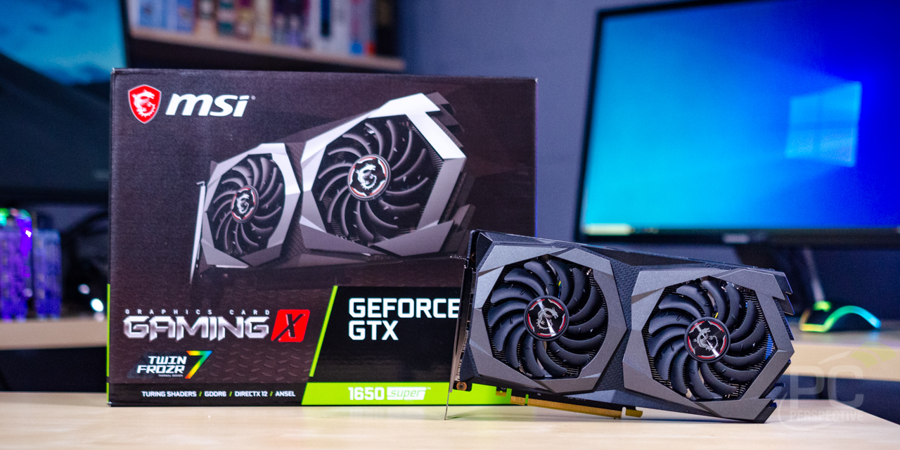
6.Cách chọn Nguồn – PSU:
Nguồn (PSU – Power Supply Unit) rất quan trọng vì nó cung cấp năng lượng cho tất cả các thiết bị khác trong bộ máy tính PC hoạt động. Bạn đừng tưởng chỉ có CPU và VGA là quan trọng nhất, nhưng thực chất nguồn quyết định tuổi thọ của tất cả phần cứng. Khi mua nguồn lần đầu bạn sẽ bối rối bởi không biết nên chọn thương hiệu nguồn nào, công suất bao nhiêu và một số chi tiết khác. Tuy nhiên, bạn phải nhớ một điều rằng không bao giờ tiếc tiền khi mua nguồn. Quan niệm mua nguồn vừa đủ để chạy là sai lầm.
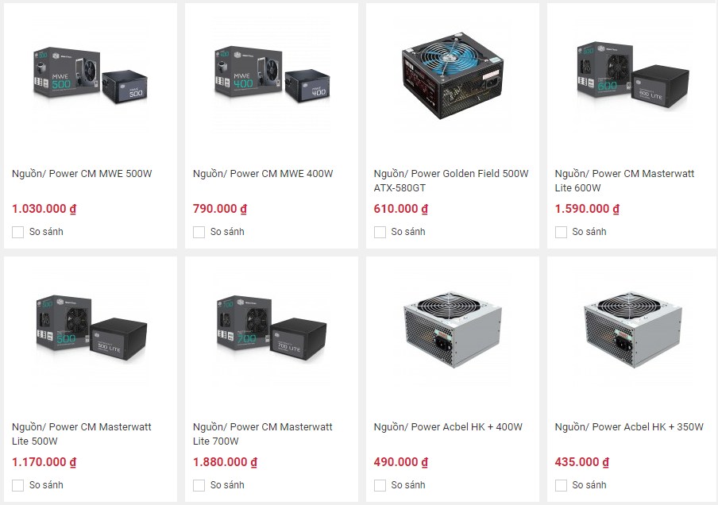
Các bước để chọn nguồn cho máy tính chơi game
Bước 1: Chọn hiệu
Lần này chúng tôi không bắt đầu với ngân sách vì như đã nói: Khi mua nguồn thì đừng tiếc tiền. Hãy quan tâm xem các linh kiện khác trong bộ PC cần bao nhiêu điện năng để hoạt động. Cách đơn giản nhất là vào các trang kiểm tra điện năng cần sử dụng như https://pcpartpicker.com/ hoặc https://outervision.com/power-supply-calculator. Từ các trang này bạn có thể tính toán ra công suất tối thiểu nguồn bạn phải có.
Có 3 lưu ý khi tính toán mua nguồn:
– Nguồn nên là linh kiện phần cứng cuối cùng để chọn cho bộ PC để bạn biết chính xác điện năng tối thiểu phải có.
– Chọn nguồn theo công suất thực.
– Luôn mua nguồn có công suất lớn hơn yêu cầu tối thiểu của linh kiện 100W đến 150W để đề phòng sau này nâng cấp linh kiện thì không cần nâng cấp nguồn.
Bước 2: Nghiên cứu các thương hiệu sản xuất.
Bạn nên luôn luôn mua nguồn từ các nhà sản xuất uy tín như nguồn Corsair, nguồn Cooler Master, nguồn Seasonic, Thermaltake…Điều này phần nào đảm bảo cho bạn một chiếc nguồn tốt và không gây hại cho máy tính của bạn. Ngoài các thương hiệu ví dụ kia bạn có thể tham khảo thêm từ các trang review lớn và cộng đồng.
Lời kết:
Chọn một nguồn cho máy tính luôn phức tạp đối với cả newbie và người có kinh nghiệm, bạn luôn cần nâng thêm hiểu biết về các dòng nguồn mới nhất.
7.Cách chọn RAM – Bộ nhớ đệm
Loại, dung lượng và tốc độ của các thanh RAM muốn gắn vào PC đều phụ thuộc vào mainboard. Nói chung, với một máy tính chơi game thì bạn không phải lo lắng về mấy thông số khác như độ trễ, điện năng. Trong phần này, chúng tôi sẽ nói nhanh về RAM desktop và một số bước để chọn mua RAM cho bộ PC của bạn.
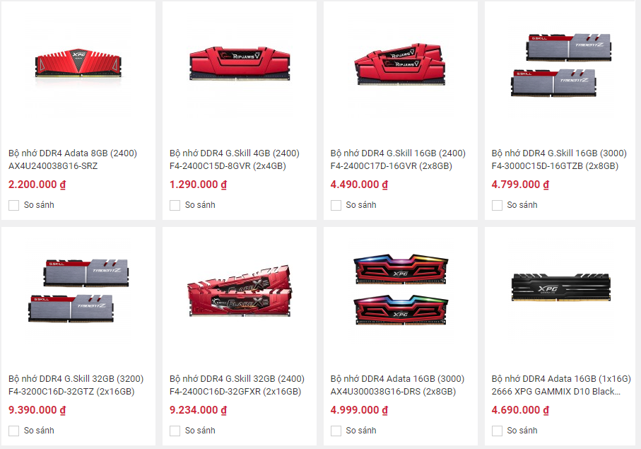
Các bước chọn RAM:
Bước 1: Ngân sách và yêu cầu của mainboard
Việc trước tiên phải làm là kiểm tra mainboard hỗ trợ RAM loại gì, bus tối đa bao nhiêu, dung lượng RAM tối đa.
Bước 2: Dung lượng cần thiết là bao nhiêu?
Không có con số lý tưởng, dung lượng RAM bạn chọn nên được nghiên cứu kỹ lưỡng bạn mua bộ PC này để chơi game gì, RAM tối thiếu game yêu cầu là bao nhiêu. Hiện nay dung lượng RAM tối thiểu để chiến game ổn định ít nhất là 8GB DDR3 hoặc DDR4.
Bước 3: Chọn thương hiệu
Sau khi xác định được loại RAM, dung lượng và ngân sách phù hợp, thì bạn còn phải chọn xem mình nên mua RAM thương hiệu gì. Bạn có thể tự nghiên cứu trên các diễn đàng hoặc đọc bài đánh giá của các trang bán lẻ.
Kết luận:
Chọn RAM có bộ PC thực sự không khó và chỉ có vài thông tin cần phải nhớ. Mỗi khi bạn quyết định hỏi 1 máy tính chơi game, hãy chuẩn bị sẵn sàng cho 3 câu hỏi: Mainboard hỗ trợ RAM gì, tốc độ RAM cần mua là bao nhiêu và dung lượng RAM bạn muốn bao nhiêu
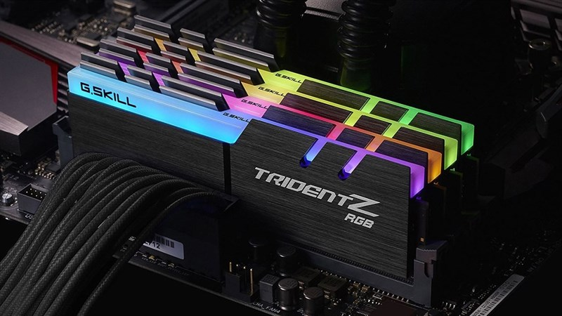
8.Cách chọn Vỏ máy tính chơi game – Gaming PC’s Case:
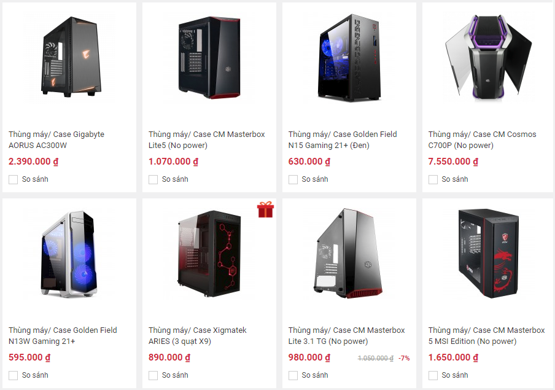
Một khi đã lựa chọn đầy đủ linh kiện thiết yếu cho bộ máy tính chơi game, bạn cần một vỏ case để gắn tât cả mọi người vào trong. Chức năng chính của case là để gắn và bảo vệ linh kiện bên trong, hơn nữa là tính thẩm mỹ. Trong phần này, chúng ta sẽ thảo luận 4 bước
Bước 1: Chọn kích cỡ vỏ cây
Yếu tố quan trọng nhất khi chọn vỏ cây là phải xác định vỏ loại nào chứa vừa các linh kiện bạn đã mua. Kích cỡ của case phụ thuộc kích cỡ của mainboard. Có các loại kích cỡ thông thường đối với vỏ cây như sau: ATX, ATX Full Tower, ATX Mid Tower, ATX Mini Tower, MicroATX, MicroATX Mid Tower, Micro ATX Mini Tower, MicroATX Slim Case, Mini-ITX Tower, Mini-ITX Desktop.
Đừng quá hoảng loạn với cả tá loại vỏ cây như trên vì bạn thông thường chỉ chọn ATX hoặc MicroATX cho các PC chơi game. Thông thường khi chọn mainboard bạn có thể chọn cỡ vỏ case luôn bằng cách nhìn vào tên của main. Ví dụ main Gigabyte B250M Gaming 3 cần vỏ case MicroATX, nhưng main MSI B250 Bazooka cần vỏ case ATX.
Bước 2: Xem xét các vỏ cây nhiều tản nhiệt, làm mát tốt
Khả năng tản nhiệt và thông gió là hai yếu quan trọng khi lựa chọn vỏ case cho máy tính chơi game. Thông thường nếu bạn muốn tản nhiệt đủ làm mát hệ thống, hãy tìm một vỏ Mid Tower đơn giản với vài quạt. Trừ khi bạn định ép xung CPU thì nghiên cứu mua thêm tản nhiệt CPU. Nếu bạn phân vân không biết vỏ cây mình định mua có đủ làm mát cho toàn bộ hệ thống PC hay không thì hãy tìm các review trên mạng để có thêm thông tin.
Bước 3: Tính thẩm mỹ – Bạn muốn vỏ PC của mình trông thế nào?
Một khi đã chọn loại vỏ case PC đạt yêu cầu kỹ thuật thì đến lúc chọn xem vỏ nào đẹp và bạn ưng ý nhất. Vỏ case có nhiều màu sắc, góc cạnh khác nhau và có thể gồm cả hệ thống đèn led sáng.
9.Cách chọn tản nhiệt – Fan, Cooler:
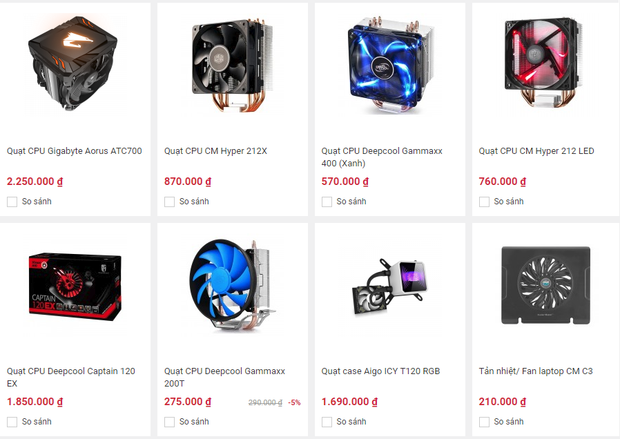
Đối với dân chơi PC hoặc dân ép xung thì tản nhiệt nước là thứ luôn phải có mới đáng xưng danh trong gian hồ. Với anh em chơi game bình thường có thêm tản nước thì đẹp, không có cũng không thành vấn đề, để tiền nâng cấp linh kiện khác ngon hơn.
Khi mua được một CPU cao cấp (thường là dòng K của Intel) thì bạn phải làm sao để nhiệt độ mát nhất có thể. Tản nhiệt stock sẵn của CPU đi kèm vẫn tốt nhưng chỉ ở mức độ vừa phải. Nếu bạn cày game nhiều hay sử dụng liên tục ở cường độ cao thì tản nhiệt stock chỉ chịu nổi thời gian ngắn thôi. Gắn thêm tản nhiệt khí hoặc tản nhiệt nước là việc không thể thiếu.
Khi chọn tản nhiệt, có 3 yếu tố quan trọng cần phải cân nhắc: Cấu trúc CPU bạn sử dụng, CPU có ép xung hay không và tiếng ồn. Chú ý rằng bạn có thể có một quá trình ép xung cao đồng thời tiếng ồn như không có nếu chọn đúng Tản nhiệt. Thêm một yếu tố khác cần cân nhắc là Kích thước tản nhiệt. Khi đã xác định được bạn quan trọng yếu tố nào nhất thì việc chọn được Tản nhiệt phù hợp rất đơn giản.
Hướng dẫn này sẽ giúp bạn làm quen với những linh kiện cần thiết để xây dựng một chiếc máy tính để bàn. Từ việc chọn từng linh kiện phần cứng, đảm bảo chúng tương thích với nhau và gợi ý những linh kiện tốt nhất trong năm 2019. Cuối bài sẽ có video quay lại các bước cơ bản để lắp một bộ PC.
CÁC TRANG KHÁC VỀ PC:
Giới thiệu các bộ phận máy tính.